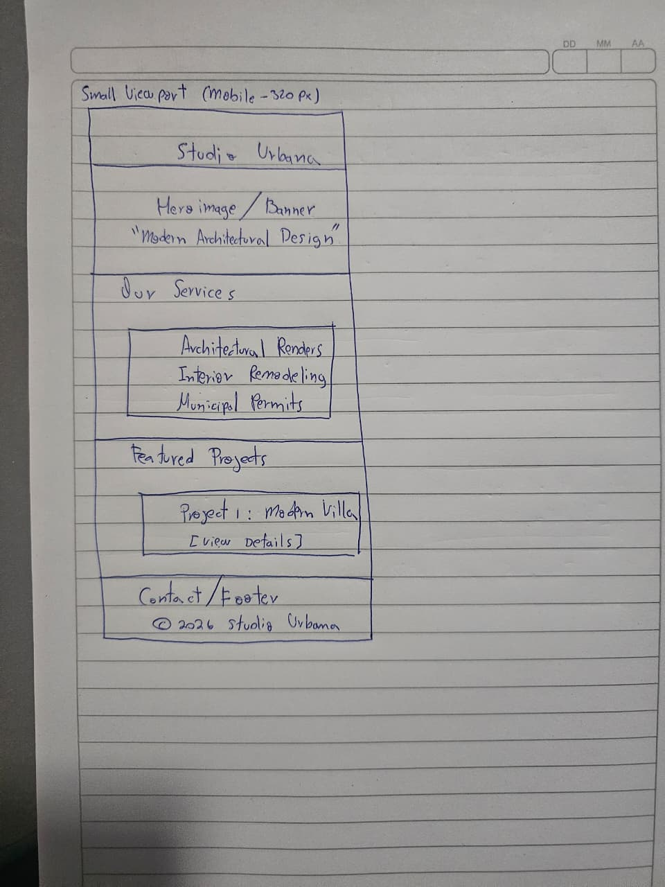
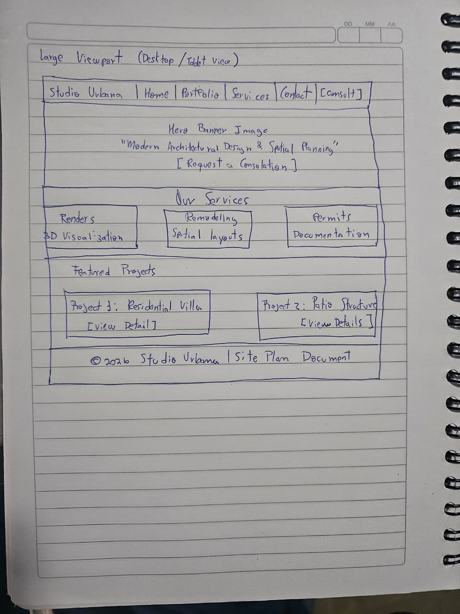

1. Site Name
Site Name: Studio Urbana
Reasoning: Studio Urbana reflects a modern approach to architectural design, interior planning, and urban landscape solutions, conveying professionalism and structural clarity to prospective clients.
Optional Domain Availability: studiourbana-design.org
2. Site Purpose
The site provides a central hub for prospective clients to explore architectural and interior design portfolios, review service methodologies, filter dynamic project cards, access budget estimation guides, and request professional consultation services.
3. Target Audience Scenarios
- Where can I view previous residential remodeling renders and floor plans to evaluate the designer's style and quality before requesting a quote?
- What technical information and documentation do I need to prepare before scheduling an initial consultation for a municipal building permit or renovation?
4. Color Scheme
The selected color palette is applied directly across this site plan document to maintain visual brand identity:
Used for primary headings, navigation backgrounds, and structural accents.
Used for call-to-action buttons, active states, and decorative borders.
Used for page backgrounds, section cards, and whitespace balancing.
5. Typography
Two primary fonts were selected from Google Fonts and integrated into this document:
- Montserrat (Headings): Applied to all major section titles (H1, H2, H3) to establish a clean, structured hierarchy.
- Roboto (Body Text): Applied to standard body text, list items, and descriptions for optimal screen legibility.
6. Wireframes
Sketches representing the homepage structural layout (Header with hamburger menu, Hero banner, stacked/grid service cards, featured projects, and footer) for small and large viewports:
Small Viewport (Mobile - 320px)

Large Viewport (Desktop / Tablet)
